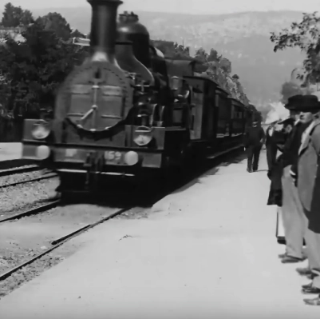

This digital version of Reality Media is a complement to the printed book (shown above). The digital version has both 2D and 3D forms.
The 2D and 3D sites are organized as a collection of galleries; in the 2D site these are pages, and in the 3D site they are 3D spaces that allow you to get inside AR and VR—to inhabit these new reality media. Each of the 2D pages has a corresponding immersive 3D gallery space.
Our printed book shows how augmented and virtual reality fall under the definition of *reality media*. All reality media aspire to imitate or even to supplant our experience of everyday reality (see the History of Reality Media ). They never fully succeed in this aspiration, however; eventually we are reminded that they are technologies mediating reality rather than supplanting it.
The corresponding immersive gallery engages with the double nature of reality media: that is, both the strategies film, television, VR and AR use to disappear as media and the ways in which the technologies and techniques of mediation reassert themselves for us as viewers. We watch a film and engage in the story and the world depicted. But we never entirely forget the fact that we are in a theater watching the screen or sitting on an airplane with a laptop. To understand the ambivalent nature of reality media, we appeal to what we call the "La Ciotat Effect."
The La Ciotat Effect

We take the term from a legend that grew up around one of the first films shown by the Lumière brothers in Paris in January, 1896: "The Arrival of a Train at La Ciotat station." The legend is that, having never seen a film before, the audience was terrified, thinking that the train on the screen was going to burst into the room. The film historian, Tom Gunning, has argued that an audience of sophisticated Parisiens wouldn't be so foolish. They were astonished, not terrified, and their astonishment arose from the fact that they had never before seen a medium as lifelike as motion pictures, even the grainy, high-contrast moving images of those first films. Film soon became one of the two most important reality media of the twentieth century, and it is a forerunner of Virtual Reality.
There is, then, the La Ciotat myth and the La Ciotat effect. The myth is the belief that a medium can perfectly imitate reality, and that myth is still with us. The La Ciotat effect is the more ambivalent reaction that allows us to appreciate the representational power of a medium (film, VR) while realizing that it is still a medium. We describe the La Ciotat effect in several chapters of Reality Media (the printed book), and we illustrate it in RealityMedia (the immersive book), beginning with this gallery.